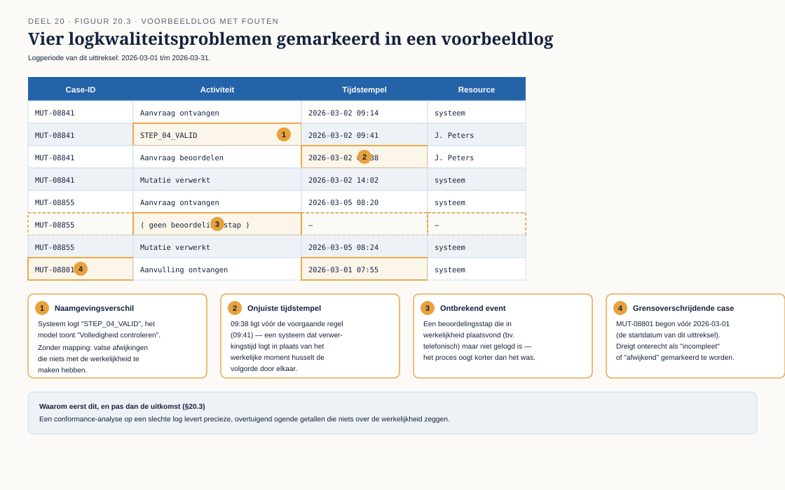
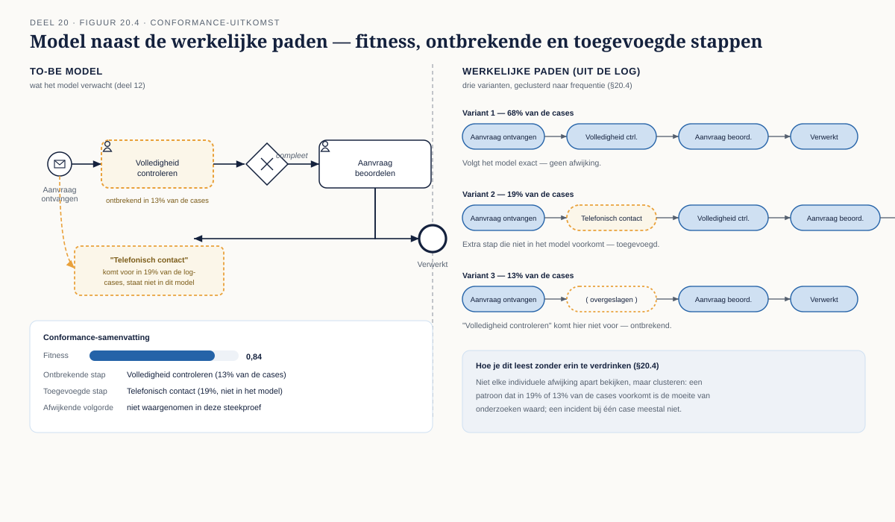

Deel 20 — Procesmining: model versus werkelijkheid
Slidedeck · Ductus-cursus BPMN, CMMN & DMN · niveau 2 · deel 20 van 30 · 22 slides
Slide 1 — Titelslide
Procesmining: model versus werkelijkheid — Deel 20
Beeldmerk, cursustitel
Spreeknotitie: Vandaag meet je, voor het eerst, of een model klopt met de werkelijkheid.
Slide 2 — Leerdoelen
Na vandaag kun je…
Vijf leerdoelen uit de reader
Spreeknotitie: Kort.
Slide 3 — Waar dit vandaan komt
Onderdeel van een driedelige BPMN/CMMN/DMN-cursus
Kort overzicht van de drie niveaus, dit deel gemarkeerd
Spreeknotitie: Alleen tonen bij een volledige-programma-afname.
Slide 4 — Eerst: de omgeving
Retroductus — inloggen, een log uploaden
Schermafbeelding van het startscherm
Spreeknotitie: 10 minuten begeleid, net als bij de eerste modelleeromgeving in dit programma.
Slide 5 — Drie soorten mining
Discovery · conformance checking · enhancement
 Figuur 20.1
Figuur 20.1
Spreeknotitie: Vandaag uitsluitend conformance checking.
Slide 6 — De event log
Case-ID · activiteit · tijdstempel
 Figuur 20.2
Figuur 20.2
Spreeknotitie: Drie verplichte kolommen, de rest is aanvullend.
Slide 7 — Vier kwaliteitsproblemen
Ontbrekende events · onjuiste tijdstempels · naamgevingsverschillen · grensoverschrijdende cases

Figuur 20.3
Spreeknotitie: Dit controleer je vóórdat je iets concludeert.
Slide 8 — Waarom dit eerst
Precieze getallen uit slechte data
Eén tekstslide
Spreeknotitie: De belangrijkste beroepsfout in dit vak — zet dit hard neer.
Slide 9 — Opdracht 1
Beoordeel een event log op vier ingebouwde problemen
Werkboekverwijzing, timer 30 minuten
Spreeknotitie: Individueel, plenair nabespreken. Niet overslaan, ook niet bij tijdsdruk.
Slide 10 — Het model naast de werkelijkheid
Conformance checking

Figuur 20.4, leeg
Spreeknotitie: Introductie.
Slide 11 — Fitness en afwijkingen
Ontbrekende stappen · toegevoegde stappen · afwijkende volgorde
Figuur 20.4, ingevuld
Spreeknotitie: Een score, geen absoluut oordeel.
Slide 12 — Niet elke afwijking apart
Clusteren op frequentie
Honderd losse afwijkingen versus drie patronen
Spreeknotitie: De vaardigheid zit in het patroon zien, niet in elk geval apart bekijken.
Slide 13 — Opdracht 2
Eerste conformance-run — Deelnemermutaties
Werkboekverwijzing, timer 30 minuten
Spreeknotitie: Individueel in Retroductus.
Slide 14 — Opdracht 3
Jouw eigen to-be model tegen de werkelijkheid
Werkboekverwijzing, timer 20 minuten
Spreeknotitie: Individueel. Waarschuw vooraf: een lage score is de bedoeling van deze opdracht, geen falen.
Slide 15 — Wie heeft gelijk
Het model — de uitvoering — of geen van beide
 Figuur 20.5, leeg
Figuur 20.5, leeg
Spreeknotitie: Drie mogelijke verklaringen voor elke afwijking.
Slide 16 — De categorie die het vaakst gemist wordt
Een legitieme, nooit vastgelegde variant
Figuur 20.5, derde tak uitgelicht
Spreeknotitie: Niet fout, niet verouderd — gewoon nooit opgeschreven.
Slide 17 — Opdracht 4
Classificeer vijf afwijkingen
Werkboekverwijzing, timer 15 minuten
Spreeknotitie: Tweetallen. Let op de reflex om automatisch naar "verouderd model" te grijpen.
Slide 18 — Van bevinding naar voorstel
Drie uitkomsten: wijzig het model, stuur bij, of doe bewust niets
 Figuur 20.6
Figuur 20.6
Spreeknotitie: Een rapport zonder voorstel is geen resultaat.
Slide 19 — Wat mining niet vertelt
Wát er gebeurde, niet waarom
Eén tekstslide
Spreeknotitie: Voor het waarom heb je deel 12's technieken nog steeds nodig.
Slide 20 — Opdracht 5 en 6 — vervolgwerk
Het bevindingenrapport, en de grenzen van mining
Werkboekverwijzing, inleverdatum
Spreeknotitie: Opdracht 5 als huiswerk; opdracht 6 kort zelfstandig.
Slide 21 — Opdracht 7
Stellingen
Vier stellingen uit het werkboek
Spreeknotitie: Plenair.
Slide 22 — Vooruitblik
Deel 21 — governance van modellen
Aankondiging: de bevinding van vandaag krijgt een structurele plek
Spreeknotitie: Geen eenmalig onderzoek — een terugkerend onderdeel van het beheerritme.